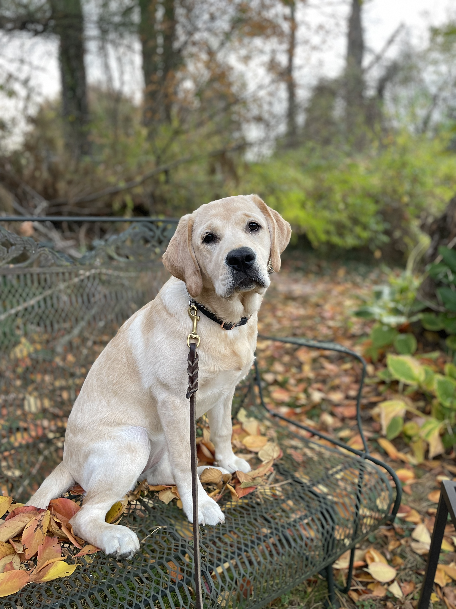
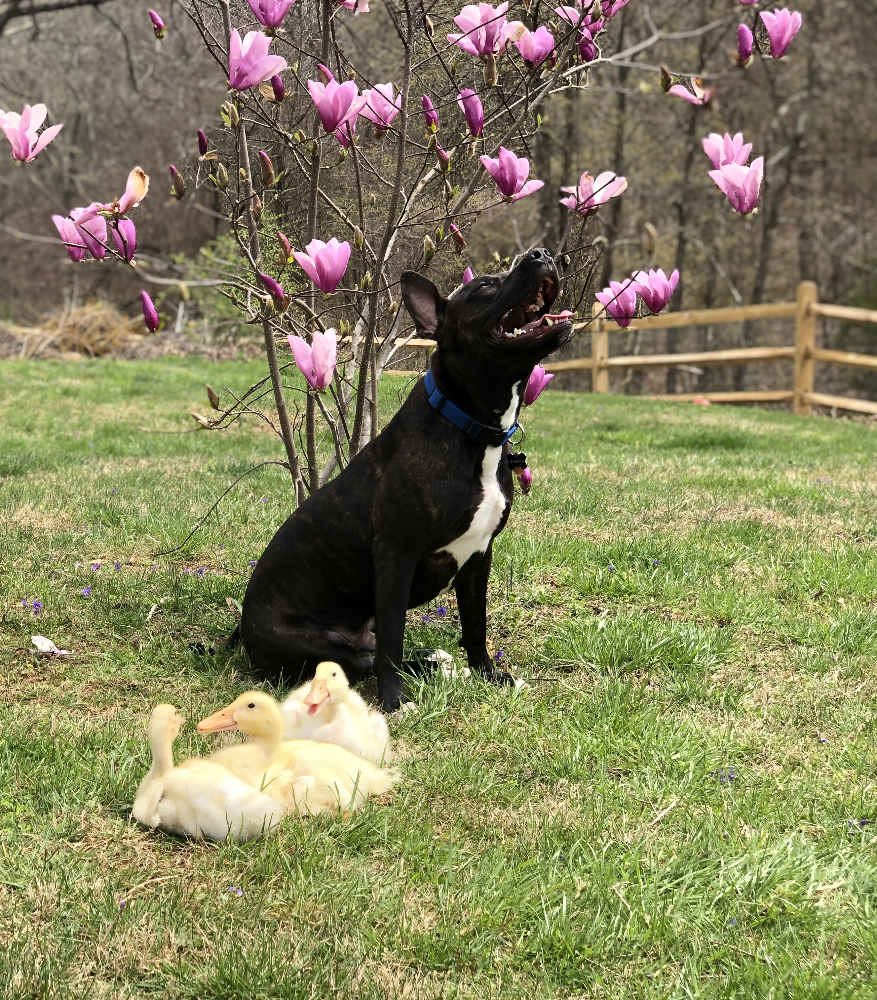
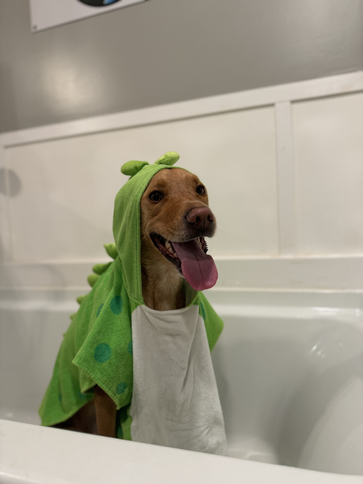

Our Services
At The Dog Ranch, we offer thoughtfully designed training and boarding options to support dogs and their owners at every stage. Each service is tailored to provide structure, consistency, and care in a safe and supportive environment.

Board & Train
Our Board & Train programs offer an immersive training experience where dogs stay at The Ranch and receive focused, hands-on training. Programs are designed to build reliable obedience, improve manners, and establish a strong foundation for long-term success.
View Details
Behavioral Consultation
Is your dog displaying unwanted or challenging behaviors? We offer behavioral consultations to help identify the underlying causes of these behaviors and develop a thoughtful, individualized plan to address them.
Behavioral consultations are typically incorporated into our Board & Train programs following an initial evaluation.
View Details
Refresher Options
Even well-trained dogs benefit from occasional practice and reinforcement. Our Refresher Options are available for dogs who have previously completed a Board & Train program with us.
- Refresher Week – A focused week of training
- Boarding with Maintenance – Continued reinforcement of commands

Regular Boarding
Planning a trip? Our Regular Boarding option provides safe, comfortable overnight care for dogs who have not completed a Board & Train program.
Dogs stay in a calm, supervised environment and receive attention, care, and social interaction while you’re away.
View Details
Spa Specials
We also offer Spa Specials as optional add-ons to select services to ensure your dog returns home clean, comfortable, and refreshed.
View Details